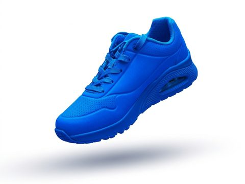
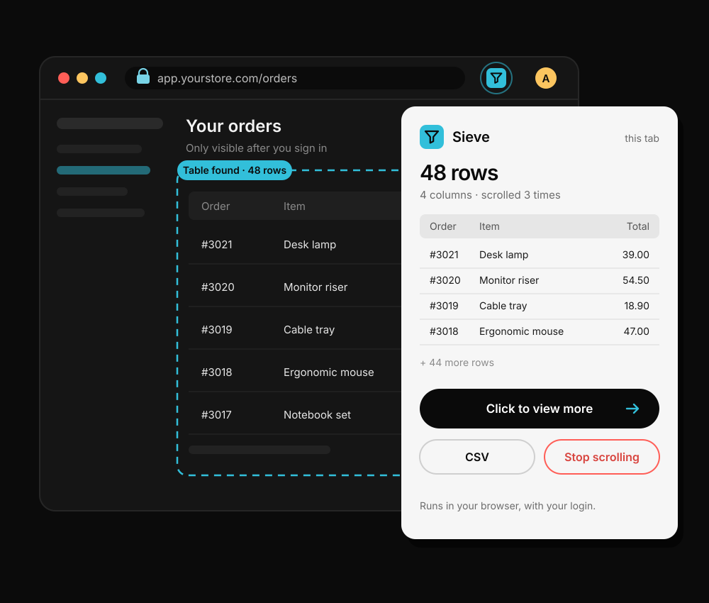
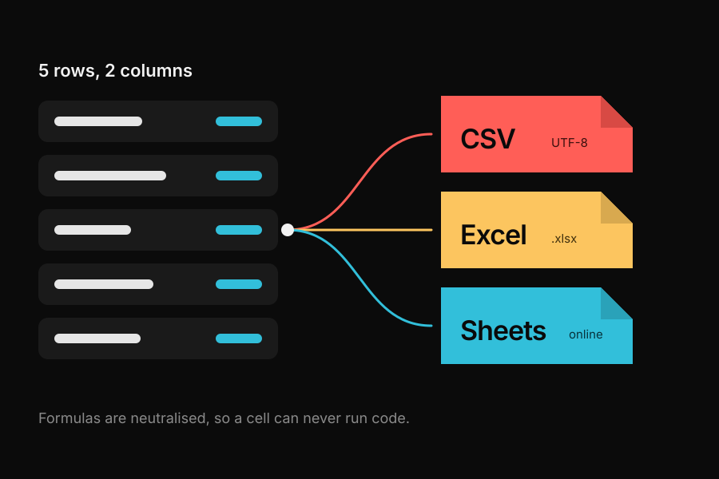
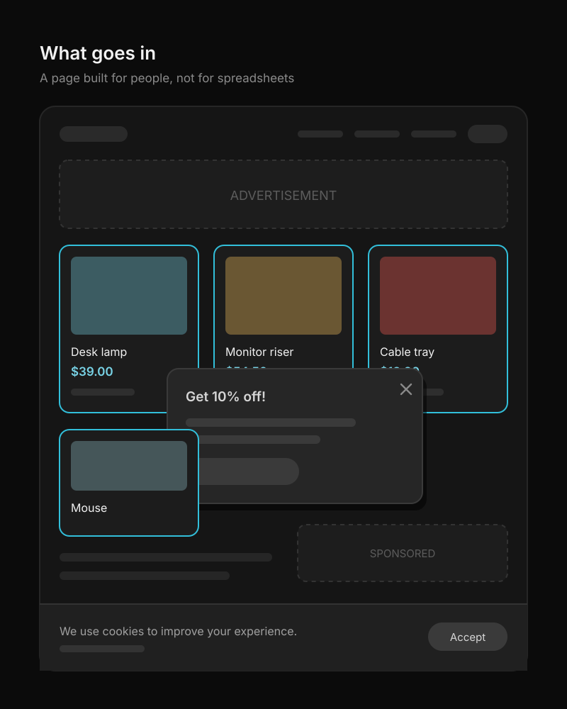
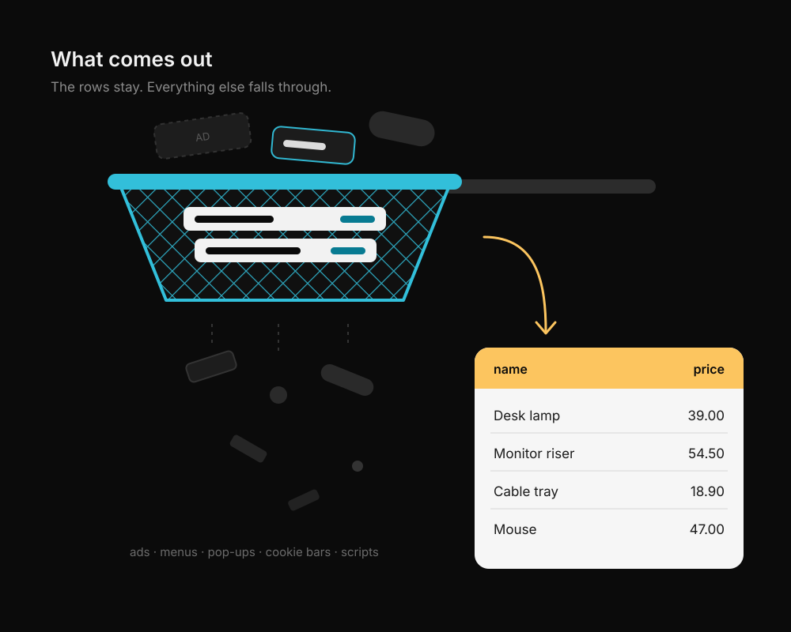

Turn any page into a clean table.
Sieve finds the rows on any web page, lets you keep the columns you want, and saves them as CSV, Excel or Google Sheets. No account, nothing stored.
Logged-in page? Download the Chrome extension
- 11ways to extract
- 4ways to export
- 0sign-ups
Tested on live pages
What Sieve does for you
It finds the table by itself
12 rows by 6 columns on the demo shop. Every table and repeated list is scored, and the biggest wins.
It follows the Next button
36 rows over 3 pages from one click, with your own delay between pages.
It reads pages behind your login
The extension reads the tab you are looking at, as you see it. Nothing is uploaded to read it.
It scrolls endless feeds for you
Stop it whenever you like and keep what has loaded, or cancel. Esc stops too.
It leaves as CSV, Excel or Sheets
CSV with a BOM so Excel reads accents, real XLSX, and a one-click copy that pastes straight into Google Sheets.
Link to file
Fetching the page…
First it lands as a link.
- category
- Lighting
- price
- $39.00
- rating
- 4.6
- stock
- In stock
Then Sieve finds the rows.
- category
- Lighting
- price_usd
- 39.00
- rating
- 4.6
- stock
- In stock
Then you shape the columns.
- file
- scraped-data.csv
- row
- 1 of 12
- columns
- 5
Then it leaves as a file.
One row's journey
- Found
On the page it is a product card, one of twelve that look alike.
- Shaped
In Sieve it becomes columns. Price is renamed and cleaned, SKU is switched off.
- Exported
In your file it is one line of text that opens in any spreadsheet.

Scrape pages behind your login
A website cannot see the pages you are logged in to. The Sieve extension can, because it runs in your own browser. It reads the tab in front of you, shows a preview, and one click sends the full table here. It scrolls infinite feeds and you can stop it at any moment.
Install in 4 steps
- Unzip the download.
- Open
chrome://extensionsand switch on Developer mode. - Choose Load unpacked and pick the
sieve-extensionfolder. - Open any page, click the Sieve icon, press Scrape this page.

Tested on real sites
Results from live pages, found automatically.

Why it is called Sieve
A sieve keeps what you want and lets the rest fall through. We do that with web pages.

